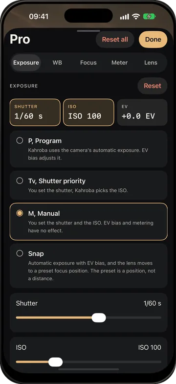
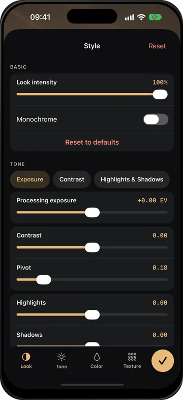
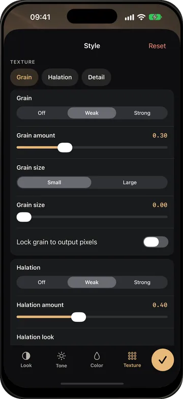
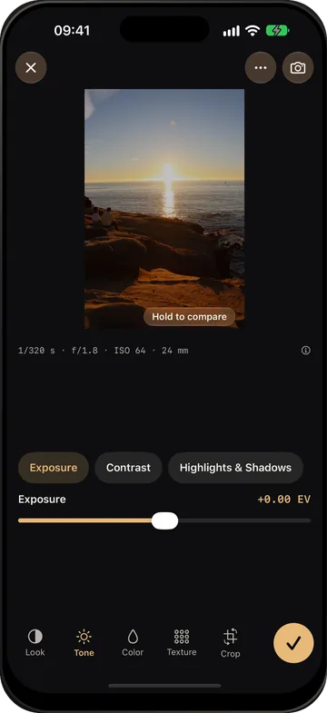
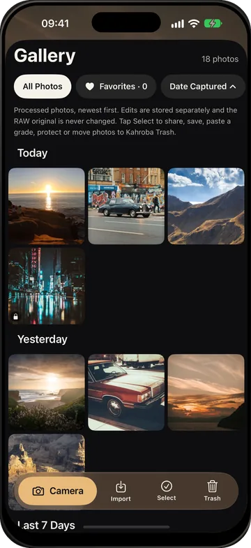

Shoot true RAW
Every shot keeps its RAW original, alongside JPEG. What you capture stays unbaked, ready to develop again later.
RAW Camera
RAW, kept like amber.
A RAW camera for iPhone. Every shot keeps its original file. Set shutter, ISO, and white balance yourself — or let AI Assist suggest a starting point for the light you're in.
Requires iOS 18 or later.
Pro controls in the moment, a full editor afterwards, and a RAW original that never changes.
Every shot keeps its RAW original, alongside JPEG. What you capture stays unbaked, ready to develop again later.
Shutter, ISO, white balance, focus, and metering. Program, shutter priority, and full manual are all here.

Tone, color, and texture can be set before you shoot, so the preview matches the direction you want.
Film-like texture, rendered from RAW. Soft grain, halation, and detail — under your control.
Develop again whenever you like. Edits are non-destructive. The original RAW is never changed.
AI Assist
AI Assist reads the scene and suggests shutter, ISO, and white balance. You stay in control — accept the suggestion, adjust it, or set every value yourself.
Need a walkthrough? See Support for how capture, editing, and privacy work.
The camera, the editor, and a private library — designed to stay out of the way of the picture.




Download Kahroba: RAW Camera on the App Store. Requires an iPhone running iOS 18 or later.